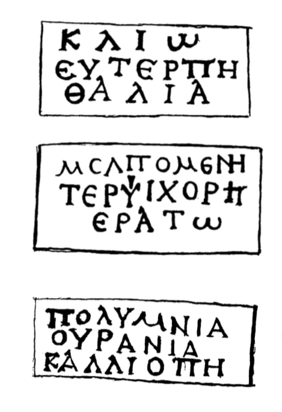

პენალი ბერძნული წარწერებით
შინაარსი / Summary
მემორიალური
ბიბლიოგრაფია Bibliography
კრიტიკული გამოცემა Interpretive Edition
Μέναν δρος Ὅμηρος Δημοσθένης
Βασιλέως Οὐστάμου
τοῦ καὶ Εὐγενίου
Κλ εί ιω
Εὐτέρπη
Θάλ ει ία
Μελπομένη
5Τερψιχόρη
Ἐρατώ
Πολυμνία
Οὐρανία
Καλλιόπη
დიპლომატიური გამოცემა Diplomatic Edition
ΜΕΝΑΝ ΔΡΟΣ ΟΜΗΡΟΣ ΔΗΜΟΣΘΕΝΗΣ
ΒΑΣΙΛΕΩΣ ΟΥΣΤΑΜΟΥ
ΤΟΥ ΚΑΙ ΕΥΓΕΝΙΟΥ
ΚΛ ΕΙ ΙΩ
ΕΥΤΕΡΠΗ
ΘΑΛ ΕΙ ΙΑ
ΜΕΛΠΟΜΕΝΗ
5ΤΕΡΨΙΧΟΡΗ
ΕΡΑΤΩ
ΠΟΛΥΜΝΙΑ
ΟΥΡΑΝΙΑ
ΚΑΛΛΙΟΠΗ
Silver pen-case, Mtskheta, 1940 (III)
Silver pen-case, Mtskheta, 1940 (III)

Silver pen-case, Mtskheta, 1940 (III)
{'ka': 'კილიო ევტერპე თალია\n მელპომენე ტერფსიქორე ერატო\n პოლიმნია ურანია კალიოპე'}
{'default': 'მცხეთაში, სვეტიცხოვლის ეზოში მცხეთის არქეოლოგიურმა ინსტიტუტმა გახსნა ქვასამარხი №14, სადაც დამარხულია ქალი. სამარხში აღმოჩნდა 25 დასახელების ნივთი, ძირითადად \n ოქრო-ვერცხლის ინვენტარი, მათ შორის ზემოხსენებული საწერი ხელსაწყო. ხელსაწყოს სახურავის ვერცხლის გოფრირებულ ნაწილზე გვხვდება შემდეგი სახელები: მენანდრე - (ელინისტური ხანის ყველაზე პოპულარული კომედიოგრაფი), ჰომეროსი (ბერძნული ეპიკური \n პოეზიის ფუძემდებელი), დემოსთენე (ანტიკურობის გამოჩენილი რიტორი). ხელსაწყო ეკუთვნოდა მეფე უსტამოსს და ასევე ევგენიოსს, რომელიც, ალბათ, მეფის მდივანი ან მწერალი იყო. სახელი Οὔσταμος ამ ფორმით საცნობარო ლიტერატურაში არ არის; შავი ზღვის ჩრდილო სანაპიროს წარწერებიდან დადასტურებულია სახელი Οὔστανος (პანტიკაპეიონიდან IV ს. \n საფლავის სტელაზე; ტანაისიდან თიასების სიაში, 220 წ.). μ და ν-ს მონაცვლეობა მოულოდნელი არ არის. Vasmer-ი Οὔστανος-ს უკავშირებს Ὑστάνης-ს და იძლევა მის ავესტურ \n ეტიმოლოგიას (lebenskräftig - სიცოცხლით, ძალღონით სავსე). Εὐγένιος - ბერძნული და დღემდე გავრცელებული სახელია საერთოდ საქართველოშიც კი და ნიშნავს - კეთილშობილს. ვისი მეფე იყო უსტამოსი, უცნობია, უთუოდ იმისი, სადაც ეს ნივთი გაკეთდა და ვისაც ის ეკუთვნოდა. კოლოფის მეორე მხარეზე, ფირფიტის ზემოთა რიგში გვხვდება მუზების სახელები: კლიო (ისტორიის მუზა), ევტერპე (ლირიკული პოეზიის მუზა), თალია (კომედიის მუზა); შუა რიგში: \n მელპომენე (ტრაგედიის მუზა), ტერფსიქორე (ცეკვის მუზა), ერატო (ეროტიკული პოეზიის მუზა); ქვემოთა რიგში: პოლიმნია (ჰიმნების მუზა), ურანია (ასტრონომიის მუზა), კალიოპე \n (ეპოსის მუზა). მუზების ასეთი თანმიმდევრობა თანხვდება ჰეროდოტეს „ისტორიის“ 9 წიგნად დაყოფას და თითოეული წიგნისთვის მუზის სახელის წოდებას. რამდენადაც ცნობილია, ეს \n ალექსანდრიელი ფილოლოგების შემოქმედებაა. როგორც ჩანს, ამ დროიდან, ასე ვთქვათ, დაკანონდა მუზების ასეთი თანმიმდევრობით გამოსახვა. მანამდე მუზების გამოხატვისას თანრიგი \n სხვა იყო (და მთავარ მუზად, I ადგილზე კალიოპე იყო ხოლმე). ენის თვალსაზრისით მცხეთაში მოპოვებულ ძეგლზე აღსანიშნავია წელთაღრიცხვათა მიჯნაზე დამკვიდრებული იტაციზმი (Κλειώ||Κλιώ; Θάλεια||Θαλία). Τερψιχόρα-ს იონიური ფორმა - \n Τερψιχόρη. ორჯერ გვხვდება ერთი და იგივე ლიგატურა: ΝΗ (Δεμοσθένης, Μελπομένη). დაწერილობაში ამ მხრივ სხვა აღსანიშნავი არაფერია, ძირითადად დაცულია კლასიკური, ატიკური ნორმები.'}
<div type="edition" xml:lang="ka" ana="mtavruli" xml:space="preserve">
<ab>
<lb n="1"/><w lemma="ქრისტე"><expan><abbr>ქ</abbr><ex>რისტ</ex><abbr>ე</abbr></expan></w>
<w lemma="განსუენება"><expan><abbr>გა</abbr><ex>ნ</ex><abbr>ო</abbr><ex>ჳ</ex><abbr>ს</abbr><ex>უ</ex><abbr>ენე</abbr></expan></w>
<w lemma="სულ">სოჳ<lb n="2" break="no"/>ლსა</w>
<name nymRef="ვაჩა">ვაჩაჲს<lb n="3" break="no"/>ასა</name>
<name nymRef="გურა"><expan><abbr>გო</abbr><ex>ჳ</ex><abbr>რაჲ<lb n="4" break="no"/>სასა</abbr></expan></name>
<name nymRef="მირა"><expan><abbr>მ</abbr><ex>ი</ex><abbr>რა</abbr><ex>ჲ</ex><abbr>ს</abbr><ex>ა</ex><abbr>ს</abbr><ex>ა</ex></expan></name>
</ab>
</div>